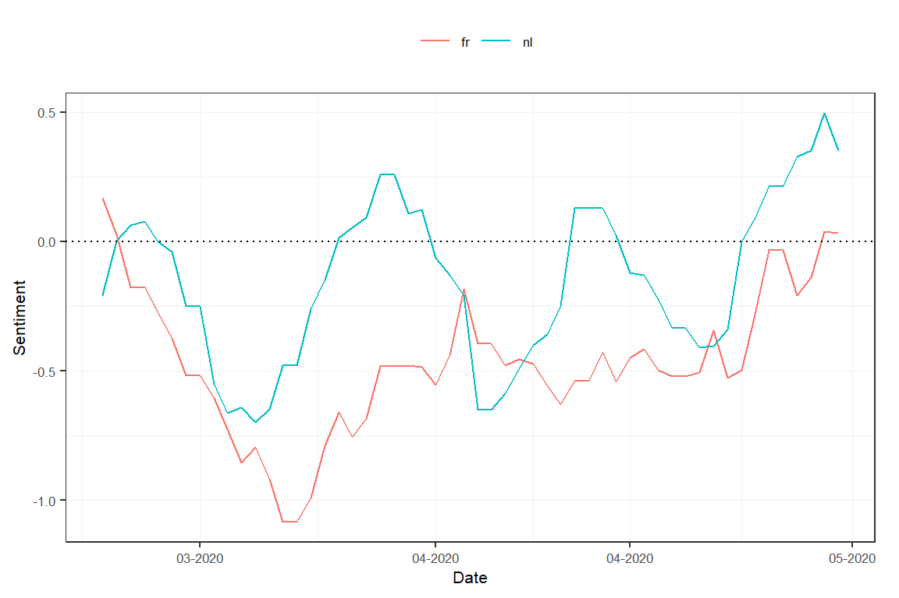

Tutorial contributed by Olivier Delmarcelle (PhD student, Ghent University).
Introduction
Textual analysis has become more and more popular nowadays as a tool to extract and derive meaningful information from the enormous amount of content available online.
Printed newspapers used to be one of the primary sources of information. As they evolved by extending their offer through online services and subscription, newspapers remain today an important information media. Even more interesting, it is now possible to perform wide textual analysis on these online versions, identifying trends across years and newspapers.
Thanks to Gopress Academic, students from various universities in Belgium are able to access a large database containing news articles from the main Belgian newspaper. These articles are the perfect material for textual analysis, such as a sentiment computation with the help of the sentometrics package.
This contributed tutorial describes how to make use of the database of Gopress Academic, which contains news articles from the main Belgian newspapers, in order to create a corpus of documents formatted for analysis through the sentometrics package.
In this small tutorial, you will learn how to:
- Access and retrieve documents from the Gopress Academic database.
- Import the Gopress documents to R and prepare them for a textual analysis.
- Use the
sentometricspackage to calculate and analyze sentiment from a corpus of documents.
Obtain data from Gopress
The Gopress Academic platform is available here. You should be able to register with your university e-mail address to gain access to the database.
After signing in, the Search page should appear and allow search across the database. The search tool allows to specify the time of publication, the newspaper, and the number of words contained in the articles. A least one keyword should always be used as a basis for the search. The results of the search appear at the bottom of the page. Returned articles will show up with a short extract.
Unfortunately, Gopress does not allow downloading in bulk the articles resulting from a search. Instead, the easiest method is to save articles of interest in “Read Later” by clicking on the star button, as shown in the following screenshot. This should be done for each article of interest.

The saved articles will appear in the “Read Later” section, accessible through the “Read Later” button at the top right of the page. From there, it is possible to download the set of saved articles in various formats, as shown in the following screenshot. For the purpose of this guide, we will only make use of articles saved in the RTF format, with one different file for each article.

Massage the Gopress data in R
To easily import the data to R, the downloaded articles should be stored in one single folder, preferably containing only the articles.
With the help of the striprtf package, articles can be imported to R.
library("striprtf") folder <- "gopress_downloads/" # the folder's path for the downloaded articles filelist <- list.files(path = folder, pattern = "*rtf") filelist <- paste(folder, filelist, sep = "") rawCorpus <- lapply(filelist, FUN = read_rtf) str(rawCorpus, list.len = 3)
## List of 1434
## $ : chr [1:53] "Help, ik heb de saaiste naam van Vlaanderen!" "De Morgen* - 07 Mar. 2020 - 22" "* DM Magazine" " " ...
## $ : chr [1:53] "Help, ik heb de saaiste naam van Vlaanderen!" "De Morgen* - 07 Mar. 2020 - 25" "* DM Magazine" " " ...
## $ : chr [1:27] "Coronapaniek slaat wild om zich heen in Italië" "De Morgen* - 05 Mar. 2020 - 1" "* " " " ...
## [list output truncated]Note that the documents in rawCorpus are presented as lists of paragraphs, which is inappropriate for most textual analysis packages. The subsequent steps serve to create a corpus object in a full-text format. The first thing to do is to extract the dates and the issuing newspapers from the articles (as in rawCorpus, everything is concatenated).
library("stringi") library("lubridate") secpars <- sapply(rawCorpus, "[[", 2) # extract second paragraphs from all articles # extract dates dates <- stri_extract(secpars, regex = "\\d\\d[ ]....[ ]\\d\\d\\d\\d") # extract dates dates <- as.Date(parse_date_time(dates, "d b y", locale = "English_Belgium.1252")) # reformat dates # extract newspapers sources <- stri_extract(secpars, regex = ".*\\*") # extract the newspaper name sources <- stri_extract(sources, regex = "[^[\\*]]*") # remove asterisks sources <- gsub("-", "_", sources) # "-" causes issues so replace with "_" sources <- iconv(sources, from = "UTF-8", to = "ASCII//TRANSLIT") # remove accents
The two vectors dates and sources now contain properly formatted dates and issuing newspapers. Note that "-" and accent characters were removed from the newspapers names as the sentometrics package does not support these characters in the feature names.
It is important to emphasize the role of the locale for date conversion, which depends on the language of the Gopress website used when downloading the data. The assumption here is that the English version of the website was used. For documents downloaded using the Dutch or French version of the website, use "Dutch_Belgium.1252" or "French_Belgium.1252" instead.
## dates
## 2020-03-02 2020-03-03 2020-03-04 2020-03-05 2020-03-06 2020-03-07
## 5 32 44 40 20 48table(sources)
## sources
## De Morgen De Tijd L'Echo Le Soir Metro FR Metro NL
## 212 388 494 332 6 2The next step is to extract the content of articles, found from the fifth paragraph. The fifth paragraph usually contains a small summary of the article’s content and may or may not be included. The below code removes the first four paragraphs of all articles.
texts <- sapply(1:length(rawCorpus), function(i) paste(unlist(rawCorpus[[i]][-c(1:4)]), collapse = " "))
It is also a good moment to do some text cleaning!
library("tm") # some text cleaning, feel free to adjust... texts <- stri_trans_tolower(texts) texts <- tm::removeNumbers(texts) texts <- tm::removePunctuation(texts) texts <- gsub("[^[:alnum:]]", " ", texts) texts <- tm::stripWhitespace(texts) texts <- stri_trim_both(texts)
Lastly, our goal is to create a data.table ready to be used within the sentometrics package. The sento_corpus() function takes as argument a data.frame type object with an "id" column, a "texts" column, a "date" column, and a number of optional numeric columns representing features of the corpus. Therefore, there is a need to transform the one-dimensional column "source" to a number of numeric columns. This can be done using the reshape package.
library("reshape") library("data.table") id <- 1:length(dates) # create an id column corpus <- data.table(date = dates, source = sources, id = id, value = 1) # initialize a corpus data.table corpus <- as.data.table(reshape::cast(corpus, date + id ~ source, fill = 0)) # one column per source # create a temporary data.table to store texts in the correct order and then merge on common ids idTexts <- data.table(id, texts) corpus <- merge(corpus, idTexts, by = "id")
As the corpus contains newspapers written in Dutch and in French, it would be interesting to have a feature that denotes the newspaper language. Adding a "language" feature allows to analyze articles in different languages independently.
lng <- ifelse(rowSums(corpus[, c("L'Echo", "Le Soir", "Metro FR")]) == 1, "fr", "nl") corpus <- cbind(corpus, language = lng)
str(corpus, give.attr = FALSE)
## Classes 'data.table' and 'data.frame': 1434 obs. of 10 variables:
## $ id : int 1 2 3 4 5 6 7 8 9 10 ...
## $ date : Date, format: "2020-03-07" "2020-03-07" ...
## $ De Morgen: num 1 1 1 1 1 1 1 1 1 1 ...
## $ De Tijd : num 0 0 0 0 0 0 0 0 0 0 ...
## $ L'Echo : num 0 0 0 0 0 0 0 0 0 0 ...
## $ Le Soir : num 0 0 0 0 0 0 0 0 0 0 ...
## $ Metro FR : num 0 0 0 0 0 0 0 0 0 0 ...
## $ Metro NL : num 0 0 0 0 0 0 0 0 0 0 ...
## $ texts : chr "natuurlijk we kunnen niet allemaal kenji gooris of nahima lanjri heten maar met een banale alledaagse naam word"| __truncated__ "natuurlijk we kunnen niet allemaal kenji gooris of nahima lanjri heten maar met een banale alledaagse naam word"| __truncated__ "scholen en universiteiten gaan per direct op slot sportwedstrijden met publiek worden tot begin volgende maand "| __truncated__ "ons land staat voor een cruciale week tegen vrijdag moet een plan klaarliggen voor een vlotte en verantwoorde e"| __truncated__ ...
## $ language : chr "nl" "nl" "nl" "nl" ...The corpus object is now ready for use!
Corpus analysis with sentometrics
The sentometrics package is a powerful package that allows to quickly compute the sentiments of a corpus of documents. It includes the use of lexicons, valences shifters (to correctly compute bigrams such as ‘not good’) and permits the creation of time series of sentiments.
Let’s start using sentometrics in our example by creating a sento_corpus object, the main object on which most methods of the package are applied. Note how spaces in feature names were replaced by the character "_" in the sentoCorpus object.
library("sentometrics") corpus <- corpus[order(date)] # order the corpus by date first sentoCorpus <- sento_corpus(corpus) summary <- corpus_summarize(sentoCorpus, features = c("L'Echo", "Le_Soir", "Metro_FR")) # summarize corpus summary$plots$feature_plot # present the frequencies for the features selected above

The news features can now be used to compute sentiment with the help of the compute_sentiment() function and using a lexicon. sentometrics already provides built-in lexicons in English, Dutch and French. The list of available lexicons is accessible through the list_lexicons data object. A list of lexicons for the sentiment computation, considering the language, can be prepared as below.
lexicons <- list( nl = sento_lexicons(list_lexicons[c("GI_nl_tr", "HENRY_nl_tr", "LM_nl_tr")]), fr = sento_lexicons(list_lexicons[c("GI_fr_tr", "HENRY_fr_tr", "LM_fr_tr")]) ) head(lexicons$fr$HENRY_fr_tr)
## x y
## 1: accomplie 1
## 2: accomplir 1
## 3: affaibli -1
## 4: affaiblir -1
## 5: affaiblissement -1
## 6: affaiblit -1The result of the computation is stored in the object s, which contains a document’s sentiment values for each lexicon applied on each feature, resulting in many sentiment vectors.
s <- compute_sentiment(sentoCorpus, lexicons, how = "counts") head(s[, 1:5])
## id date word_count GI_nl_tr--De_Morgen GI_nl_tr--De_Tijd
## 1: 115 2020-03-02 753 -1 0
## 2: 161 2020-03-02 668 -1 0
## 3: 619 2020-03-02 515 0 0
## 4: 849 2020-03-02 1035 0 0
## 5: 926 2020-03-02 559 0 0
## 6: 40 2020-03-03 852 4 0In order to present the evolution of sentiment over time, the previous calculation needs to be aggregated by the dates. This is done using the aggregate() function, and by specifying beforehand a control object for the aggregation with ctr_agg(). The following code aggregates by giving more importance to larger documents and creates a moving average accros a period of 7 days. The measures object stores the result of the aggregation, and a plot() method is defined for it.
ctr <- ctr_agg(howDocs = "proportional", howTime = "equal_weight", by = "day", lag = 7) # control object measures <- aggregate(s, ctr) # aggregate the sentiment into a sento_measures object plot(measures, "features") # by newspapers

To study the sentiment per language, we can redefine the features based on the existing newspaper features, according to the language of the outlet.
measures <- aggregate(measures, features = list("fr" = c("L'Echo", "Le_Soir", "Metro_FR"), "nl" = c("De_Tijd", "De_Morgen", "Metro_NL"))) plot(measures, "features") # by language

The tools available through sentometrics can as well be complementary to other analyses, such as topic model analyses. Let’s have a look at what a topic model procudes for the french part of our dataset, creating a document-feature matrix using quanteda methods and using a model from the stm package.
library("quanteda") library("stm") frenchCorpus <- corpus_subset(sentoCorpus, language == "fr") # easy subsetting using the language feature # create and clean a document-feature matrix dfm <- dfm(frenchCorpus, tolower = TRUE, remove_punct = TRUE, remove_numbers = TRUE, remove = c(stopwords("fr"), stopwords("nl"))) %>% dfm_remove(min_nchar = 3) %>% dfm_trim(min_termfreq = 0.95, termfreq_type = "quantile") %>% dfm_trim(max_docfreq = 0.10, docfreq_type = "prop") dfm <- dfm_subset(dfm, ntoken(dfm) > 0) # apply a topic model with 5 topics topicModel <- stm::stm(dfm, K = 5, verbose = FALSE) topTerms <- t(stm::labelTopics(topicModel, n = 10)[["prob"]]) topTerms
## [,1] [,2] [,3] [,4] [,5]
## [1,] "wallon" "bce" "déconfinement" "partis" "trump"
## [2,] "région" "revenus" "enfants" "ministres" "américain"
## [3,] "paiement" "ménages" "hôpitaux" "etats" "pétrole"
## [4,] "olivier" "obligations" "écoles" "nva" "etatsunis"
## [5,] "report" "dividende" "école" "parti" "bourse"
## [6,] "fédération" "revenu" "social" "michel" "américains"
## [7,] "ceo" "bancaire" "soins" "parlement" "new"
## [8,] "horeca" "centrales" "données" "proposition" "chinois"
## [9,] "eau" "crédits" "parfois" "corona" "donald"
## [10,] "construction" "actifs" "maisons" "chambre" "paris"We can now use the result of this topic model to build new features to analyse for our sentoCorpus object. This time, the add_features() function will be used with keywords to automatically assign features to documents. The keywords object represent lists of words associated to each topics. Documents will receive a score between 0 and 1 based on the frequencies of the document’s words for each topic. At the end of the process, the new features will behave similarly to the previous ones. Notice that old features were removed by setting them to NULL.
keywords <- lapply(1:ncol(topTerms), function(i) topTerms[, i]) # build the keywords object names(keywords) <- paste0("TOPIC_", 1:length(keywords)) # define the feature names featuresToRemove <- names(docvars(frenchCorpus))[-1] # store the current features that will be removed # add features based on the appearence of the topic keywords within documents, and remove old features frenchCorpus <- add_features(frenchCorpus, keywords = keywords, do.binary = FALSE, do.regex = FALSE) docvars(frenchCorpus, featuresToRemove) <- NULL head(docvars(frenchCorpus)) # new features of the corpus
## date TOPIC_1 TOPIC_2 TOPIC_3 TOPIC_4 TOPIC_5
## 1 2020-03-02 0.15789474 0.10 0.00000000 0.00000000 0.00000000
## 2 2020-03-02 0.78947368 0.00 0.11111111 0.00000000 0.00000000
## 3 2020-03-02 0.05263158 0.04 0.00000000 0.00000000 0.00000000
## 4 2020-03-03 0.15789474 0.00 0.02777778 0.04545455 0.00000000
## 5 2020-03-03 0.05263158 0.08 0.00000000 0.00000000 0.00000000
## 6 2020-03-03 0.10526316 0.00 0.00000000 0.04545455 0.03333333Finally, we can once again compute sentiments based on those new features. This will present how sentiment evolved over time, with regard to the different topics of the model. However, we’re going to use a slightly different method to obtain a time series of the sentiment values by using the sento_measures() function. This function effectively combines compute_sentiment() and aggregate() and returns a sento_measures object as output. We define a new sento_lexicons object containing the french lexicons, and since we already defined the ctr object earlier, we can simply use it again.
frenchLexicons <- lexicons[["fr"]] topicMeasures <- sento_measures(frenchCorpus, frenchLexicons, ctr) plot(topicMeasures, "features")

This is as far as we will go. We covered some functionalities from sentometrics but there is more to see! Notably, the sento_model() function which can be used to model a sentiment-based regression. It is also possible to use more complex weighting schemes and valence-enhanced lexicons.
You can find more examples and information about the sentometrics package on the website and in the package’s vignette.